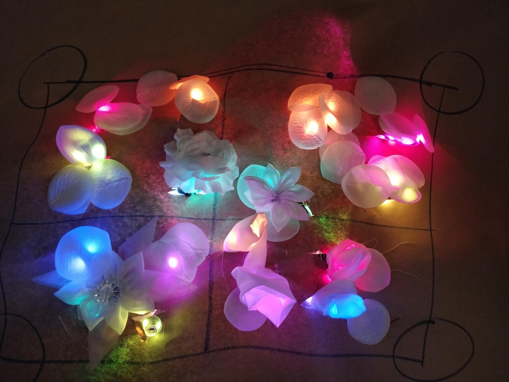

For my Master's Thesis Project, I am researching feminism as it is applied to science. Specifically the standards of scientific and medical imaging. Both of these practices involve taking image data from the human body in a way that is reductive of the body and its experiences. People assume that these images are the "truth" of your body, that whatever you see in them is the end-all be-all. But this is not the case. Medical and scientific images go through a lot of subjective interpretation. HeartSense seeks to make people aware of these shortcomings and how we can use the technology used in medical and scientific imaging to depict the human body as a sensitive and complex being that is situated in the context of the world rather than as a source for data to be mined.
This project is a continuation of previous work done by Dr. Nassim Parvin of Georgia Tech and other researchers within her research lab, the Design & Social Interaction Studio. Documentation of previous iterations of HeartSense can be found here.
My iteration of the project will take the form of a table where participants will collaboratively use their biometrics to create a projected visualization of their collective experience as they listen to music.

We decided to develop our version of heart sense using the heart's interbeat interval (IBI) and GSR instead. This is mainly because of the addition of music as a design criteria. We found that the rate of change of individual heart beats would be relative to others in comparison to the beat of the music. In other words, when the beat of the music got faster, peoples' heart rates would increase and vice versa.

We spent a lot of time making different prototypes of what this experience could be. We played with different materials, forms, and configurations to find the most compelling one.
A new idea we plan to prototype is the development of a "dance floor" that will be placed on a table top. Four robot "dancers" with markers as feet will make patterns on the surface of the dance floor by taking in participants' biometrics. If they sense that any participants' IBI is moving in a similar direction, they will dance together at the center of the dance floor.